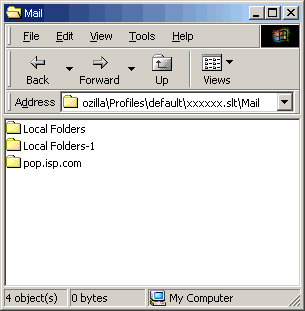

Troubleshooting Mozilla
- Why doesn’t my page look right in Mozilla?
- I’m trying to view a file on a website, and the address looks correct, but all I see is a bunch of garbled garbage on my screen.
- My bank site blocks Mozilla!
- I cannot open Mozilla / my profile. Mozilla says the profile is in use.
- Why can’t I access secure (https://) Web sites? (Linux)
- I’m using a transparent proxy (such as Junkbuster) and I’m having weird browsing problems. What’s happening?
- Middle click (or Ctrl+click) on a link does not open a new tab.
- I love a theme I’m using, but weird things are happening with it. Is there a way to fix it?
- I tried to install a Mozilla add-on (.xpi) directly from a Web page, but clicking the ‘Install’ link didn’t work.
- I have downloaded a Mozilla add-on XPI file, but can’t figure out how to install it.
- How do I uninstall something installed from an XPI?
- The sidebar comes up empty.
- Help! I can’t access my e-mail any more!
- I use GNOME. I installed Mozilla from a mozilla.org binary, and now Nautilus isn’t working properly.
- My anti-virus program thinks my INBOX has a virus and won’t let me access my INBOX!
- My toolbar/menubar is gone! How do I get it back?
- My personal toolbar is empty, and I cannot add any bookmarks to it. How do I fix it?
- I cannot download large files.
- File downloading has been very slow lately, why?
- My system crashed when I exited Mozilla. Now all my mail are gone. What do I do?
- Help, my bookmarks are all gone!
Be sure to read the Mozilla 1.5 Release Notes for common known problems on your operating system.
- 1. Why doesn’t my page look right in Mozilla?
-
Mozilla is designed to support Internet standards as thoroughly as possible. Some sites have pages coded around standard quirks of older browsers (rather than standards-compliant code that all current browsers, e.g. Mozilla, Netscape 7, and Microsoft Internet Explorer 5.5 or later, can read), and some sites even use erroneous browser sniffing to block Mozilla. If this is the case, you should contact the site webmaster about updating their server configuration and page code.
- 2. I’m trying to view a file on a website, and the address looks correct, but all I see is a bunch of garbled garbage on my screen.
-
You can usually work around this by right-clicking the link, going to ‘Save Link Target As’, saving the file to disk and then viewing the saved file locally.
The typical cause is that the web server is serving the file as a plain-text file. Contact the site administrator about the misconfiguration.
- 3. My bank site blocks Mozilla!
-
Some financial-institute sites block access from Mozilla because the site administrators do not understand the security features in Mozilla. Mozilla is secure and does not save sensitive information such as password if the site choose to prevent it. Talk to your bank about removing the block on Mozilla.
- 4. I cannot open Mozilla / my profile. Mozilla says the profile is in use.
-
Look in your profile directory for file called
parent.lock,lock, or.parentlock. Delete the file. (The file is created on start-up to prevent multiple instances of Mozilla or Mozilla-based browser from accessing the same profile simultaneously. The file is destroyed on exit.) - 5.
Why can’t I access secure (
https://) websites? (Linux) -
The most likely cause is that you did not install the Personal Security Manager when you installed Mozilla. Uninstall Mozilla and reinstall with it included. You can also install it directly.
- 6. I’m using a transparent proxy (such as Junkbuster) and I’m having weird browsing problems. What’s happening?
-
Some transparent proxies (including some versions of Junkbuster) do not handle HTTP/1.1 properly. The first thing to try is to go to Edit | Preferences | Advanced | HTTP Networking and select ‘Use HTTP 1.0’.
- 7. Middle click (or Ctrl+click) on a link does not open a new tab.
-
The option for opening links in new tabs with middle-click (or Ctrl+click) is off by default. To turn it on, open the Edit menu and choose Preferences. Navigate to Navigator | Tabbed Browsing catagory in the left pane. Then check
Middle-click, Control+click or Control+Enter on links in a Web page
. - 8. I love a theme I’m using, but weird things are happening with it. Is there a way to fix it?
-
Some third-party themes lack a file called
fakeAccount.css. The absence of this file can cause buggy behavior, such as windows failing to minimize properly. Check if a more recent version of the theme is available.If you feel comfortable with experimenting with theme files, create an empty file called
fakeAccount.cssand put it into the JAR of the affected theme. JARs are standard zip files, so you can open and rewrite them using the zip utility of your choice. Be sure to keep a copy of the original JAR file on hand in case of problems.If this does not fix the problem, and the problem does not occur after uninstalling the theme and using Classic or Modern, you may wish to report the problem to the theme’s author.
- 9. I tried to install a Mozilla add-on XPI directly from a web page, but clicking the ‘Install’ link didn’t work.
-
You need to switch on both JavaScript (in Edit | Preferences | Advanced | Scripts & Windows) and Software Installation (in Edit | Preferences | Advanced | Software Installation) for this to work.
If it still doesn’t work, try downloading the XPI and installing it directly.
- 10. I have downloaded a Mozilla add-on (.xpi) file, but can’t figure out how to install it.
-
Check that Software Installation is enabled, then open the file in Mozilla by dragging it to the browser window; by opening it using File | Open File; by typing the location into the location bar; or (in Windows) by double-clicking on the XPI file and telling Windows to open
.xpifiles using Mozilla. - 11. How do I uninstall something installed from an XPI?
-
There is not yet a method of automatically uninstalling XPIs other than themes. However, when you have uninstalled Mozilla prior to installing a new build, you can manually remove the unwanted XPI.
-
Try closing and opening the sidebar again, with the F9 key. If this fails, try resetting the interface.
- 13. Help! I can’t access my e-mail any more!
-
The two common causes of e-mail problems in Mozilla Mail are:
The mail summary files (files with the
.msfextension) have become corrupted.Some test builds of Mozilla have been known to improperly compact mail folders, rendering the mail within unreadable by Mozilla Mail/News.
In the first case: exit Mozilla (including Quick Launch), find the folders in your user profile that contain your e-mail (the
Mailand, if you use IMAP,ImapMailfolders). Back up your mail folders, and delete the.msffiles. Do not delete files that appear without any extension – these are the files that contain your actual e-mail. Restarting Mozilla Mail should automatically generate new summary files.In the second case: the mail files are stored as plain text, so you can try opening the mail files with a text editor (or word processor) to recover the text of your e-mail by hand.
- 14. I use GNOME. I installed Mozilla from a mozilla.org binary, and now Nautilus isn’t working properly.
-
If Nautilus has been configured to use the Mozilla Gecko rendering engine, installing a mozilla.org binary on top of that may cause odd problems and conflicts. You should use the package of Mozilla supplied by your Unix or GNU/Linux distribution, as their version should work properly with their package of GNOME.
If you want to install a testing build of Mozilla, install it to a non-default location (e.g., in your home directory), and leave the system defaults to use the older distribution version.
- 15. My anti-virus program thinks my INBOX has a virus and won’t let me access my INBOX!
-
This happens when the anti-virus program is set to check all files (not just those that can actually carry malicious code), and to lock or quarantine any file containing anything it thinks is a virus signature.
Switch off your anti-virus, open your inbox (deleting any e-mail with attachments that may contain a virus), set the anti-virus to scan only file types that can actually carry malicious code, take the anti-virus out of ‘paranoid’ mode if it is set to that, and switch it back on.
Mozilla Mail is not susceptible to known e-mail viruses.
-
If you cannot get your toolbar back from the View | Show/Hide menu, look under the menubar/toolbar area. You should find a small rectangular box. Click the button to show your toolbar.
- 17. My personal toolbar is empty, and I cannot add any bookmarks to it. How do I fix it?
-
Open the Bookmark Manager (open the Bookmarks menu and choose Manage Bookmarks). In the window, select Personal Toolbar Folder. Open the View menu and choose Set as Personal Toolbar Folder.
If that does not work, you need to reset the interface. Completely exit Mozilla, then delete the file
localstore.rdfin your profile. You will lose some UI settings such as toolbar button and Sidebar visibilities, but those can be easily reset. - 18. I cannot download large files.
-
When you download a file in Mozilla, the file is first saved to your temporary directory and then moved to the destination directory. If you have restricted space for your temporary directory, consider either increase the space or use a download manager for large downloads.
- 19. File downloading has been very slow lately, why?
-
When you have a large list of download history, Mozilla becomes slow in starting and finishing file downloads. To clean the list, open the Tools menu and choose Download Manager. Select the entries you want to delete (hold down the Shift key for continuous selection, and the Ctrl key for non-continuous selection). Then click Remove from List.
- 20. My system crashed when I exited Mozilla. Now all my mail are gone. What do I do?
-
Your preference file is corrupted and has been reset to default. If you have a backup copy of your profile folder, the easiest way is restoring the
prefs.jsfile.If you do not have your profile backed up, follow these steps:
-
First, make a copy of your profile at another location.
-
Now, navigate to the
Mailsub-directory of your profile directory. You may want to change the view setting to see all of the sub-directory names.
-
Open Mozilla Mail & Newsgroup. Open the File menu, choose Offline, then choose Work Offline from the submenu.
-
Recreate your mail accounts.
For POP3 accounts (mail is downloaded to your computer): when you are prompted to enter the incoming server, enter the name exactly as appeared in your Mail directory. At the end of the account setup, if you see the checkbox to download messages, make sure you un-check the box.
For IMAP accounts (mail is stored on servers): No special step is needed.
-
Revist your Mail directory. You should see duplicate folders for your POP3 accounts if you have those.

-
If you want to restore your previous newsgroup accounts, go to the
Newsdirectory of you profile.In Mail & Newsgroup, recreate your newsgroup accounts. When you are prompted to enter the newsgroup server, enter the name exactly as appeared in your News directory.
Revist your News directory. You should see duplicate folders and files for your newsgroup accounts.
-
Completely exit Mozilla.
-
Open the
prefs.jsfile in your profile in a text editor. -
Find the lines with your new account directory name, e.g.
user_pref("mail.server.server2.directory", "C:\\...\\Mail\\Local Folders-1"); user_pref("mail.server.server3.directory", "C:\\...\\Mail\\pop.isp-1.com"); user_pref("mail.server.server4.directory", "C:\\...\\News\\news.isp-1.com");Change that last portion of the line to your original account directory names, e.g.
user_pref("mail.server.server2.directory", "C:\\...\\Mail\\Local Folders"); user_pref("mail.server.server3.directory", "C:\\...\\Mail\\pop.isp.com"); user_pref("mail.server.server4.directory", "C:\\...\\News\\news.isp.com"); -
Save the file. You should have all your mail and news data restored when you restart Mozilla.
To prevent this from happening, we advise you to back up your profile periodically.
-
- 21. Help, my bookmarks are all gone!
-
In the very unfortunate event that your bookmarks are lost, you will not be able to restore them unless you have backup. You may try to reclaim some of them from your browsing history; open the History window (go menu, history), right click (option click on Mac OS) on the Web address you want to bookmark, and choose Bookmark this Link.
To prevent this from happening, we advise you to back up your profile periodically.